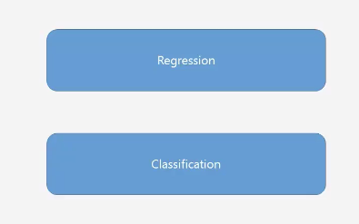

[tensoflow 2.0] 4. 분류(Classification) 프로젝트
분류(Classification) 프로젝트
지도학습 (supervisor learning)의 문제 해결 방법은 2가지가 있다.
- 회귀
- 분류
앞서 선형 회귀를 통해서 다수의 입력으로 다수의 예측 결과를 가져오는 방법까지 학습했다. 여기서 더 나아가야 할 부분은 선형으로 표현할 수 있는 특성을 찾고 최적화 하기 위해서 가공하는 부분이 추가적으로 필요한데 그 부분은 머신러닝 단기 집중 과정에서 더 상세하게 진행할 수 있을거 같다.

이제부터는 지도학습에서 문제를 해결하는 두번째 방법인 분류에 대해서 학습할 것이다.
분류는 일상생활에서 많이 쓰이고 머신러닝을 하는 대표적인 이유 중 하나이다.
특히 logistic regression은 앞으로 할 딥러닝의 뼈대가 될 중요한 개념이다.
선형 회귀 정리
선형 회귀에서는 먼저 가설을 설정해야 한다. 입력 값에 대한 출력 값의 관계를 표현할 수 있는 선을 찾고 그 선 중에서 가장 적합한 선을 찾는 과정이다.

그 최소한의 손실을 찾기 위해서 제곱 손실을 통해서 손실값을 제곱한다.

이 때 손실의 그래프에서 경사 하강법을 통해 가장 손실이 적은 부분을 찾아 나가는 과정을 가진다.

Binary Classification
참이냐 거짓 이냐 2가지 라벨값을 분류하는 모델

예를 들어 보스턴 마라톤 대회의 Qualify 하는 과정을 살펴본다면 페이스가 어느 정도가 되면 유효하고 그 이하가 되면 유효하지 않다고 판단할 수 있다.

근데 이 때 적합한 페이스를 찾는 과정을 살펴보면 선형 회귀 방법과 유사하다.
페이스와 오피셜 타임의 관계를 보면 선형적인 관계를 가지고 있는 것으로 보인다.
따라서 특정 위치를 정해 그 이상의 데이터만 유효하다고 판단하게 할 수 있다.

근데, 만약 참전 용사들이 다수 참가하게 되어 이상 데이터가 발생했다고 가정 해보자. 그러면 유효 하다고 판단되는 선을 정하기 힘들 것으로 보인다.
이런 이상값들 때문에 기준이 바뀔 수 있다. 선형 회귀에서는 의미있는 값이지만 분류에서는 이런 이상값 때문에 분류가 제대로 안될 수 있다.
이런 오류를 피하기 위해서 분류에서는 한계치를 정하고 그 한계를 넘어가는 값은 한계값으로 바꿔서 처리할 수 있다.
Sigmoid 함수

어떤 지점 이상이 되면 급격하게 감소하게되어 1이상이 되지 않고 어느 지점 이하가 되면 급격하게 증가해서 0밑으로 떨어지지 않게 된다.
https://icim.nims.re.kr/post/easyMath/64
sigmoid 함수는 로지스틱 회귀분석 또는 Neural network의 Binary classification 마지막 레이어의 활성함수로 사용한다.
데이터를 두 개의 그룹으로 분류하는 문제에서 가장 기본적인 방법은 로지스틱 회귀분석이다. 회귀분석과의 차이는 회귀분석에서는 우리가 원하는 것이 예측값(실수)이기 때문에 종속변수의 범위가 실수이지만 로지스틱 회귀분석에서는 종속변수 y값이 0 또는 1을 갖는다. 그래서 우리는 주어진 데이터를 분류할 때 0인지 1인지 예측하는 모델을 만들어야 한다.
가설

Binary Classification 비용 최적화
앞서 Sigmoid 함수를 사용해 바이너리 분류 가설을 세운다고 했다. 이제 가장 적당한 위치를 찾기 위해서 어떻게 해야 할까?
Linear Regression의 경우 오차를 제곱하기 때문에 빗나갈수록 점점 값이 증가한다.
하지만 Logistic의 경우에는 아래와 같이 구블구블한 형태가 된다. 따라서 여기가 제일 작은 값이라 생각했지만 더 작은 값이 있는 위치가 있을 수 있다.

이를 해결하기 위해서 여러가지 방법이 있는데, 경사 하강법을 사용하지 않거나 이 구블구블한 부분을 펴줄 필요가 있다.
Log 함수를 통한 확장
급격히 증가하는 케이스에 log를 씌우면 급격히 감소한다.

따라서 2가지 케이스에 맞춰 손실 함수를 구분해 사용한다.
- y 가 1인 경우
- y가 0인 경우

y값이 1일 때 왼쪽 그래프를 보면 1에서 멀어질수록 값이 손실값이 커지게 된다.
y값이 0일 때 오른쪽 그래프를 보면 0에서 멀어질수록 손실값이 커진다.
따라서 y값에 맞춰서 다른 손실 함수를 사용한다면 경사 하강법을 적용할 수 있는 손실 함수를 구성할 수 있다.
다음 공식을 텐서 플로우1로 옮긴 코드다.


Qualifying 여부 예측 모델 제작
기존의 linear regression과 모댈 생성 부분이 조금 다르다.
우리가 이제 sigmoid 함수를 쓰기 때문에 **activation='sigmoid' 가 추가된다.**
# Define Sequential model and Dense
model = tf.keras.models.Sequential()
model.add(tf.keras.layers.Dense(1, input_shape=(3,), activation='sigmoid'))
손실 함수 역시 기존과 다르게 생성한다.
# Use softmax
# model.add(Activation('sigmoid'))
# Stochastic gradient descent (SGD) Optimizer
sgd = tf.keras.optimizers.SGD(lr=t_r)
# categorical_crossentropy loss function
model.compile(loss='binary_crossentropy',
optimizer=sgd,
metrics=['accuracy'])
하단 부분은 동일하다.
# prints summary of the model to the terminal
model.summary()
# Train the model
history = model.fit(np.array(x_train), np.array(y_train), epochs=t_t)
테스트 결과는 다음과 같다.
Gender :Male, Age :24, Pace :297

Multinomial Classification 개념
이전에는 2가지 경우에 대해서만 분류하는 방법에 대해서 실습했는데, 이번에는 여러가지 태그에 대해서 분류하는 방법에 대해서 학습한다.
만약 개와 새와 고양이를 찾는 로직이 필요하다면 어떻게 해야할까?

이렇게 개냐 아니냐, 새냐 아니냐, 고양이냐 아니냐로 3가지 바이너리 분류를 만들어 계산하면 쉽게 구할 수 있어 보인다.


이 때의 손실함수는 어떻게 돌아갈까?
3가지의 데이터가 들어가고 3가지의 결과가 나온다. - 전체를 더하면 1이 되는 값으로 분류를 예상한다.

각각의 확률값에 대해서 가장 확률이 높은 분류값을 1로 줄 수 있다.
One - Hot encoding
딱 하나의 데이터만 1로 표시하는 것을 원핫 인코딩이라 한다.

기록등급 데이터 만든기
요구 사항은 다음과 같다.
- M/F
- Age
- Pace
3가지 데이터를 가지고 Grade를 예측해야 한다.
이를 위해서 데이터에 Grade를 추가해야 한다.
# 마라톤 데이터를 읽어오고 모든 데이터에 Grade를 1로 준다.
marathon_2015_2017_qualifying = pd.read_csv("./data/marathon_2015_2017_qualifying.csv")
marathon_2015_2017_qualifying["Grade"] = 1
# 그리고 이 데이터의 요약을 뽑는 함수 describe를 사용해 요약된 정보를 담는다.
statistics_2015_2017 = marathon_2015_2017_qualifying["Official Time"].describe()
이 때 요약 정보는 다음과 같다.
count 79638.000000 mean 13989.929167 std 2492.272069 min 7757.000000 25% 12258.000000 50% 13592.000000 75% 15325.000000 max 37823.000000 Name: Official Time, dtype: float64
이제 이 데이터의 25% 값보다 낮은 값은 Grade를 0으로 75% 보다 높은 값은 2로 줘서 0~2 사이의 Grade 값을 줬다.
# 25퍼 값보다 작으면 값을 0으로 75프로 값보다 크면 값을 2로 바꿔준다.
marathon_2015_2017_qualifying.loc[marathon_2015_2017_qualifying["Official Time"] <
statistics_2015_2017["25%"], "Grade"] = 0
marathon_2015_2017_qualifying.loc[marathon_2015_2017_qualifying["Official Time"] >
statistics_2015_2017["75%"], "Grade"] = 2
그리고 데이터를 학습 데이터와 테스트 데이터로 나누는 행위는 앞서와 같다.
marathon_2015_2016 = marathon_2015_2017_qualifying[marathon_2015_2017_qualifying['Year'] != 2017]
marathon_2017 = marathon_2015_2017_qualifying[marathon_2015_2017_qualifying['Year'] == 2017]
df_2015_2016 = pd.DataFrame(marathon_2015_2016,columns=['M/F', 'Age', 'Pace', 'Grade'])
df_2017 = pd.DataFrame(marathon_2017,columns=['M/F', 'Age', 'Pace', 'Grade'])
# Dataframe to List
record_2015_2016 = df_2015_2016.values.tolist()
record_2017 = df_2017.values.tolist()
학습 모델에서 조금 차이가 있다.
# Define Sequential model and Dense
model = tf.keras.models.Sequential()
# 3개의 입력값으로 3가지 출력값이 나올 수 있기 때문에 3을 입력한다.
model.add(tf.keras.layers.Dense(3, input_shape=(3,), activation='sigmoid'))
# Stochastic gradient descent (SGD) Optimizer
sgd = tf.keras.optimizers.SGD(lr=t_r)
손실 함수도 다른 함수를 사용해야 한다.
# 카테고리의 손실 함수를 위해 categorical_crossentropy 사용
model.compile(loss='categorical_crossentropy',
optimizer=sgd,
metrics=['accuracy'])
그리고 특히 중요한 부분으로 원핫 인코딩 작업을 해주는 함수가 있다.
# One hot encode [0, 1, 2] to [[1,0,0], [0,1,0], [0,0,1]]
# 원핫 인코딩을 아주 쉽게 사용 가능하다.
y_one_hot = tf.keras.utils.to_categorical(y_train)
만약 y값 (grade) 가 1이라면 [0,1,0] 으로 데이터를 변경한다.
- 0 ⇒ [1, 0, 0]
- 1 ⇒ [0, 1, 0]
- 2 ⇒ [0, 0, 1]
로깅 부분에서는 손실값과 우리가 matics에서 정의한 정확도(accuracy) 값을 출력하도록 한다.
for step in range(t_t):
if step % 100 == 0:
cost_val = history.history['loss'][step]
a_val = history.history['accuracy'][step]
log_ScrolledText.insert(END, "%10i %20.5f %20.7f" % (step, cost_val, a_val*100)+'\n')

회귀는 마스터한거 같은데 분류 부분은 아직 잘 모르겠다.
더 학습과 실습이 필요하다.
이 분류 부분은 딥러닝에서도 사용한다고 하니 나중에 다시 살펴보자.